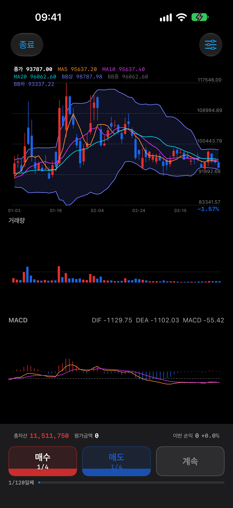
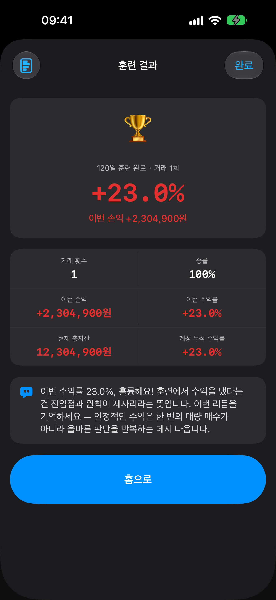
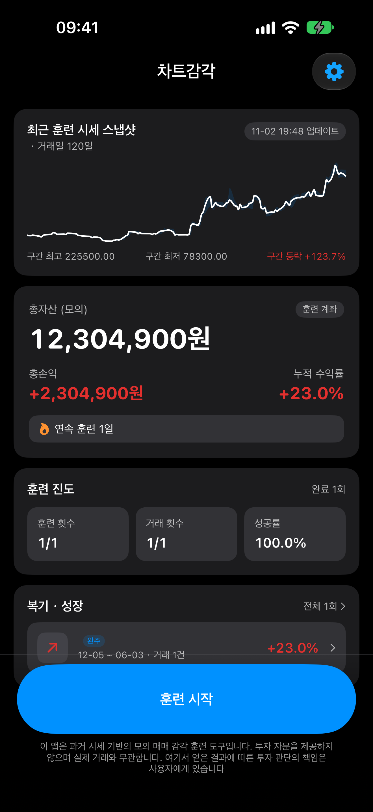

실전에서 실수하면 돈으로 배웁니다. 종목도, 시기도 랜덤으로 주어지는 블라인드 훈련으로, 진짜 실전과 같은 불확실성 속에서 판단력을 기르세요.
App Store에서 다운로드iPhone 전용 · 일회 구매(구독 없음) · 완전 오프라인


실시간 시세 앱도, 게임도 아닙니다. 과거 데이터로 감각을 기르는 훈련 도구입니다.
종목과 시작 시점이 랜덤으로 정해집니다. 차트를 다 넘기기 전에는 이후 흐름을 알 수 없습니다. 결과를 미리 아는 복습용 차트가 아닙니다.
1,310종목의 5년치 일봉 데이터를 앱에 내장했습니다. 지하철에서도, 비행기 안에서도 훈련할 수 있습니다.
회원가입, 로그인, 구독 결제가 없습니다. 한 번 구매하면 모든 기능을 계속 사용할 수 있습니다.
MA 5·10·20, 볼린저 밴드(20일, 표준편차 2배), MACD, RSI, KDJ, 거래량을 기본 탑재하고 모두 켜고 끌 수 있습니다.
초기 자금 1,000만원, 1주 단위 매매, 비중 선택(1/4·1/3·1/2·전량), 수수료와 증권거래세 설정까지 실습할 수 있습니다.
훈련할 때마다 손익·승률이 기록되고 계정 단위 성장 통계로 내 감각이 좋아지고 있는지 추적합니다.
30일 · 60일 · 120일 중에서 훈련 기간을 고르고, 하루씩 차트를 넘기며 판단합니다.
훈련을 시작하면 과거의 어느 종목, 어느 시점에서부터 시작할지 정해집니다.
차트를 하루씩 진행하며 매수·매도 시점과 비중을 직접 결정합니다.
선택한 기간을 완주하면 손익, 승률, 거래 내역이 정산됩니다.
전체 흐름을 다시 보며 내 판단이 어땠는지 되짚습니다. 더 집중하고 싶다면 종목명과 날짜를 가리는 더블 블라인드 모드도 있습니다.
볼린저 밴드와 이동평균선을 함께 보며, 매수·매도 버튼으로 바로 주문합니다.
